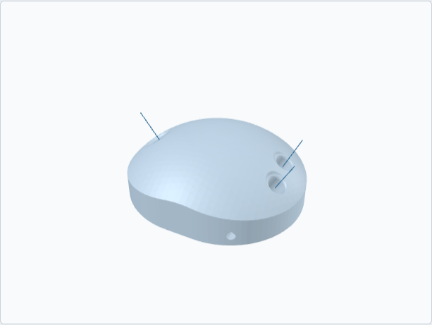

Rev Puck
$89 plus shipping. Made to order.
Order on Etsy Order on TikTok Shop Build it first, free

The Rev Puck is the part of your ball your hand touches, printed from your drill sheet: thumb, middle and ring hole sizes in 1/64-inch steps, both spans, forward or reverse and lateral pitch on every hole, right or left hand, through or blind thumb. The holes are aimed at the ball's center the way a zero-pitch hole is drilled, with your pitches on top, so your thumb and fingers oppose each other the way they do on your ball.
It's about 300 g in PETG. Light enough to hold for a long time, heavy enough that your fingertips have to do some work. A pocket in the base takes coins or washers when you want more weight, and a tunnel through the side takes the paracord wrist cord that comes with it, so you can swing it without it going anywhere.
What you do with it
Four drills on the card in the box: fingertip carries at your desk, thumb pops on the cord, slow swings to feel where the thumb leaves, and cupped-wrist holds. Ten to fifteen minutes a day. It's for the thumb leaving first and the fingers staying, in your own holes, without a fifteen-pound ball in the room.
What you need to order
Your drill sheet: right or left hand; thumb, middle and ring hole sizes; middle span and ring span; forward or reverse and lateral pitch on each hole; through or blind thumb. Paste it into the personalization box at checkout, or build it first and paste the exported fit sheet. If you're not sure of your sizes, the Fit Kit comes off the same printer and its $24 comes off this.
In the box
- One Rev Puck from your sheet, bores smoothed by hand
- Paracord wrist cord, threaded
- A printed fit sheet matching your order
- The drill card
- A roll of bowler's tape
Lead time and the guarantee
Made to order. Printing takes 2 to 4 business days, then 2 to 5 days in the post. If the puck doesn't match the sheet on your order, I reprint it free within 30 days. The full terms.
Swing-and-hold drills only. Never throw it. It is not a bowling ball. Not for children under 12 without supervision.